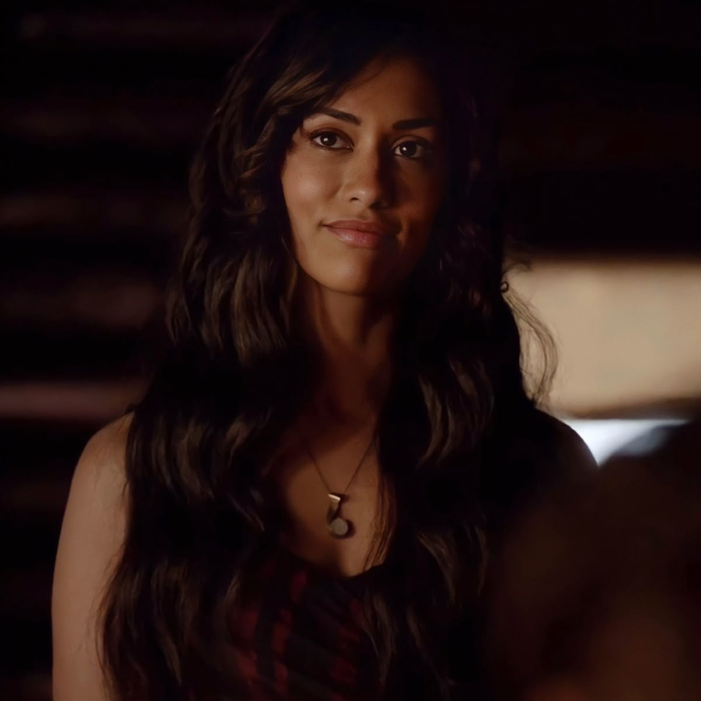

Personagens
Conheça alguns moradores de Mystic Falls.
Conheça alguns moradores de Mystic Falls.
MYSTIC FALLS
Humanos, vampiros, bruxas e híbridos fazem parte das histórias e mistérios da cidade.

Uma jovem que acaba entrando no mundo sobrenatural de Mystic Falls.

Vampiro sarcástico e impulsivo, irmão mais velho de Stefan.

Vampiro que tenta controlar seus instintos e preservar sua humanidade.

Uma vampira inteligente e misteriosa ligada ao passado dos irmãos Salvatore.

Um híbrido da família Mikaelson, conhecido por sua força e poder.

Uma poderosa bruxa da família Bennett e grande amiga de Elena e Caroline.

Uma jovem determinada que passa por grandes mudanças durante sua história.
Uma vampira Original e integrante da antiga família Mikaelson.

Uma antiga e poderosa bruxa ligada a importantes acontecimentos sobrenaturais.